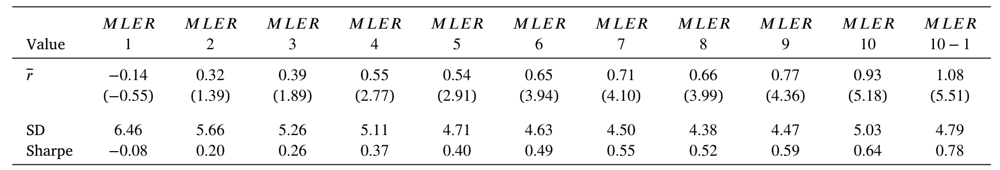
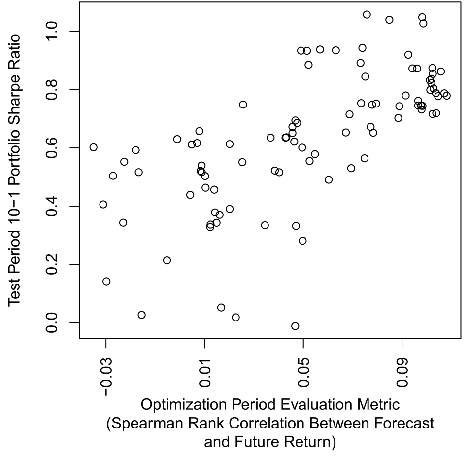
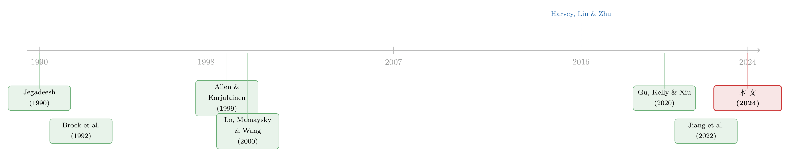

让机器去看 K 线图：一台神经网络，把「技术分析」从学术的垃圾桶里捡了回来
本文读的是 Murray, Xia & Xiao (2024, JFE)：作者只用一只股票过去 12 个月的累计收益（也就是一张「一年期价格图」上肉眼能看到的全部信息），训练一个卷积—长短期记忆神经网络去预测未来收益。结果，机器「读图」生成的预测能极强地解释横截面收益——多空十分组合每月赚 1.08%，t = 5.51，在最大的 500 只股票里依然显著。这等于说，被学术界判了几十年「死刑」的技术分析（charting），其实是有料的；弱式有效市场假说，被一台机器拆穿了。
1 一个尴尬的悬念
先说一个学术圈和华尔街之间长期存在的、谁也不愿意点破的尴尬。
按照弱式有效市场假说 (weak-form efficient market hypothesis, EMH) 的说法，只靠一张历史价格图——也就是 K 线、走势、形态这些东西——是构造不出能赚钱的组合的。换句话说，看图操作、所谓的技术分析 (technical analysis) 或者「画线」(charting)，理应是一门徒劳无功的手艺。几十年来，学术研究也大体上站在这一边：从 Brock et al. (1992) 到后来的各种检验，结论要么是「技术信号没用」，要么是「看起来有用，但那是数据窥探 (data snooping) 的假象」。
可问题来了：技术分析在投资实务里从来没断过香火。基金经理用，交易员用，散户更是离不开。一门被学术界反复证伪的技术，为什么在真金白银的世界里活得这么好？
这就是本文的张力所在。两种可能：要么实务界的人集体犯傻，要么——学术界拿来「看图」的工具，本身就太钝了。
2 钝刀子的问题：人看不出的，未必不存在
接着，一个自然的问题是：以前的研究到底是怎么「看图」的？
答案是：要么把图浓缩成几条预先设定好的规则（比如「均线金叉」「双底」），要么用相对线性的统计方法去拟合。这里有个隐含的假设——价格图里的信息，是可以被几条人为规则、或者一个线性函数概括的。
但价格走势里真正值钱的东西，恰恰可能藏在非线性和变量之间的交互里。一段先跌后平的走势、和一段先平后跌的走势，累计收益可能一样，形态却完全不同；人眼一眼能分辨，线性回归却把它们当成同一个数。最接近本文精神的前辈是 Lo, Mamaysky & Wang (2000)，他们用核平滑 (smoothing estimators) 去提取价格形态与未来收益之间的非线性关系，第一次给「看图」找到了一点学术尊严。可惜这项工作被 Jegadeesh (2000) 一篇评论打得很惨：批评者指出，结论对平滑带宽 (bandwidth) 这个主观参数极其敏感，换个参数利润就接近于零。
于是本文的思路呼之欲出：换一把更锋利的刀。用现代机器学习——尤其是为「捕捉复杂非线性与交互」而生的神经网络——去替代当年那把钝钝的平滑估计。机器学习恰好是模仿人脑学习的工具，天然适合刻画 Lo et al. (2000) 笔下那个「在长期观察价格图中学会复杂形态」的看盘人。
3 真正关键的一步：先划一条不可逾越的「红线」
但如果只是把模型换成神经网络，这篇文章顶多是个技术升级，根本压不住 Jegadeesh (2000) 那两条致命的批评——参数是事后挑的，以及利润是不是真的存在。机器学习的超参数（层数、训练轮次、损失函数……）比平滑带宽多得多，岂不是更容易「调参调出一个好结果」？这正是 Harvey et al. (2016) 警告的多重检验陷阱，也是 McLean & Pontiff (2016) 担心的样本外失效问题。
真正关键的一步，在于作者给自己划了一条不可逾越的红线，我认为这是全文的灵魂：
把 192701–196306 这段历史单独切出来，称为「优化期」(optimization period)，所有关于模型架构、损失函数、加权方式、因变量定义的选择，都只在这段数据里做完、定死；然后才进入 196307–202212 的「测试期」(test period) 去检验。测试期里不再回头碰任何一个建模决策。
这一刀切下去，意义非同小可。它意味着主检验的结果是货真价实的样本外表现——你不可能「先看到 1963 年以后的好结果、再回头挑一个好模型」。Jegadeesh (2000) 关于「事后选参数」的批评，被这条时间红线直接堵死。而作者用组合分析 (portfolio analysis) 作为主要方法，又回应了「利润到底有没有」的那条批评。
在优化期里逐一比较之后，作者最终选定的架构是带长短期记忆的卷积神经网络 (convolutional neural network with long short-term memory, CNNLSTM)，损失函数用均方误差 (MSE)，并且给每个月相同的总权重、月内每只股票等权。
4 数据与变量：机器到底「看」了什么
数据来自 CRSP，样本是股票—月观测，覆盖 192701–202212。每个月 \(t\)，样本包含上月末在 NYSE/AMEX/NASDAQ 上市的美国普通股；为了保证能画出一张完整的一年期价格图，要求每只股票在 \(t-12\) 到 \(t-1\) 这 12 个月都有非缺失的收益，并且能算出市值。
输入变量极其朴素——就是过去 12 个月的月度累计收益 \(CR_1, \dots, CR_{12}\)。这里 \(CR_k\) 是从 \(t-12\) 算到 \(t-12+k-1\) 的累计收益，正好对应一个投资者在月末看着一张一年期价格图时，从图的最左端一路读到第 \(k\) 个月所看到的那条曲线。机器学习要做的，就是从优化期数据里学出一个函数 \(f\)，使损失最小，然后用它生成预测：
$$ MLER_{i,t} = f\big(CR_1, CR_2, \dots, CR_{12}\big) $$
注意两个刻意为之的「简陋」：第一，只用 12 个变量，而不是像 Gu et al. (2020) 那样喂进几百个公司特征——因为本文的目的不是榨干所有可预测性，而是检验「一张普通价格图」里有没有料；第二，不对图做缩放（Jiang et al. (2022) 会把图归一化、只保留形状），从而让机器同时学到形态和幅度。说白了，作者是在尽可能忠实地模拟一个真人看盘者能看到的东西。
5 反转：机器读出来的，是一座金矿
然后，反转出现了。
把测试期里的股票按 \(MLER\) 排成十组、市值加权，平均超额收益从第 1 组的每月 −0.14% 一路单调爬升到第 10 组的 0.93%。做多第 10 组、做空第 1 组的多空组合，每月赚 1.08%——t 值高达 5.51，远远超过 Harvey et al. (2016) 为防多重检验而提出的 t > 3 门槛。如表 3 所示，这条单调向上的收益阶梯，正是「机器读图确实读出了未来收益」的最直观证据。

Table 3: presents the time-series averages of the monthly portfo-
而且这不是靠风险换来的。各组合相对若干主流因子模型的 alpha 呈现与超额收益类似的形态；波动率、偏度、在险价值 (VaR)、预期损失 (expected shortfall) 这些风险指标，都不支持用风险来解释这个收益梯度。
预测力在大部分子区间都很稳。唯一的例外是 200501–201412，多空收益接近于零——但作者诚实地刨根问底：罪魁祸首是 2009 年（具体是 200904 和 200908 两个月）几笔巨亏，源于组合当时异常重的动量暴露，撞上了那场著名的「动量崩溃」。撇开这段，故事依旧成立：最近的 201501–202212 子区间，多空组合每月仍有 1.20%，t = 2.13。
更要命的是——它在大盘股里照样有效。只用市值最大的 500 只股票，多空组合每月还有 0.72%，t = 4.37。这一刀，基本堵死了「这不过是小盘股、流动性差股票里的噪音」这种最常见的辩解。
6 拆黑箱：非线性、交互，以及「这不是动量」
主结果立住之后，一个自然的追问是：机器到底学到了什么？这是个棘手的问题，因为神经网络是个黑箱。作者做了几件漂亮的拆解：
第一，它是稳的。 用相隔很久的不同子样本各自拟合出的预测函数高度相关，对应的多空组合持仓重叠、收益同向。这意味着一个真人看盘者，是有可能在足够长的时间里把这些形态学会的——这恰好和 Jiang et al. (2022) 的「形态与时间、市场无关」形成有趣的对照：本文强调的是跨时间的持久性。
第二，值钱的恰恰是「人眼擅长、回归不擅长」的那部分。 预测值的变异里，将近三分之二来自非线性与交互项，而其中近一半又是由交互驱动的。这正面印证了第 2 节的猜想：以前的钝刀子之所以切不出东西，是因为信息本就藏在线性方法看不见的地方。
第三，它不是动量和反转的马甲。 \(MLER\) 确实含有与动量 (Jegadeesh & Titman, 1993) 和反转 (Jegadeesh, 1990) 相关的成分，但很大一部分预测力与这两者无关。进一步，它与 Jiang et al. (2022) 基于图像的预测只是弱正相关，控制后依然显著；Neely et al. (2014) 的 14 个技术信号、Freyberger et al. (2020) 的 14 个交易摩擦变量，都解释不掉它。作者甚至把高、低未来收益对应的价格图摆出来肉眼对比，发现即便动量、反转相近，图形上仍有人眼可辨的差异。
7 优化真的有用吗：0.69 这个数字
文章还顺手回答了一个方法论上常被忽略的问题：在优化期表现好的模型，到了测试期还会继续好吗？ 这关系到「用事前优化来选模型」这套做法本身值不值得信。
作者把优化期里的各个候选模型，分别拿去测试期生成多空组合，发现优化期评估指标与测试期夏普比率 (Sharpe ratio) 之间的 Spearman 秩相关高达 0.69。如图 7 所示，这条强正相关说明：优化过程确实挑出了那些样本外更能打的模型。这一点连 Gu et al. (2020) 都没有专门检验过，算是本文给「机器学习做资产定价」这一大方向补上的一块实证。

Figure 7: Relation Between Optimization Period and Test Period Performance. Bali, T.G., Goyal, A., Huang, D., Jiang, F., Wen, Q., 2022. Predicting cor
8 文献脉络
把这条线索捋一遍，故事其实很清晰。
最早，技术分析在学术界基本是被否定的：Brock et al. (1992) 发现简单技术规则能预测道指，但随后的工作把它归因于数据窥探。Allen & Karjalainen (1999) 用遗传算法（一种早期机器学习）去搜索 S&P 500 的交易规则，结论是样本外不灵。真正给「看图」翻案的尝试来自 Lo, Mamaysky & Wang (2000)，他们用核平滑提取价格形态的非线性信息——却被 Jegadeesh (2000) 以「对带宽敏感、利润近零」打回。

与此同时，资产定价的另一条主线在 Gu et al. (2020) 之后全面拥抱机器学习，用几百个特征去预测收益；图像派的 Jiang et al. (2022) 则把价格图直接喂给 ML。而所有这些 ML 工作，都被 Harvey et al. (2016) 的多重检验质疑笼罩着。本文站的位置，正是这两条线的交汇点：用最现代的工具（神经网络）去做 Lo et al. (2000) 当年想做的事，同时用「优化期/测试期」这条时间红线，干净地越过 Jegadeesh (2000) 与 Harvey et al. (2016) 的批评。它把一个老问题，用一个新方法，给出了一个难以辩驳的新答案。
（关于把机器学习的「黑箱」拆成「玻璃箱」、并追问它到底学到了什么，信用市场里有一个很好的姊妹篇，可参见《把机器学习的黑箱拆成玻璃箱：公司债收益率能被「看懂」地预测吗？》；而关于「ML 的超额收益到底是不是在重新发明套利」，可参见《机器学习是不是在「重新发明」套利？》。）
评论与延伸（Q&A + 研究方向）
(a) 几个可能的疑问
Q：只用 12 个过去收益，凭什么能赚到 1% 以上？这跟动量不就是一回事吗？
不是。标准动量用的是 \(t-12\) 到 \(t-2\) 的单个累计收益，本质是一个线性信号；本文用的是 12 个分月的累计收益，让机器去捕捉它们之间的非线性与交互。文中明确显示，预测力的近三分之二来自非线性与交互，且控制动量、反转后依然显著——所以它含有动量成分，但远不止动量。
Q：「优化期/测试期」这条红线，真能堵死调参嫌疑吗？
这是本文最硬的地方。所有建模决策都在 1963 年之前定死，1963 年以后不再回头改任何一个选择，因此测试期结果是纯样本外的。它直接回应了 Jegadeesh (2000) 对 Lo et al. (2000) 「事后挑参数」的批评。当然，红线只能管住论文内部的选择，管不住「整个学界在 1963 年后积累的先验」这种更隐蔽的窥探。
Q：会不会只是小盘股、流动性差的票里的噪音？
作者用最大的 500 只股票单独做了一遍，多空组合每月仍有
0.72%、t = 4.37。同时 Freyberger et al. (2020) 的 14 个交易摩擦变量也解释不掉这个关系。所以「流动性故事」很难成立。
Q：和 Jiang et al. (2022) 的「图像派」机器学习有什么区别？
三点：输入不同（他们用含量价、均线的日频图像，本文只用 12 个月度累计收益）；缩放不同（他们只保留形状，本文同时保留形状与幅度）；结论侧重不同（他们强调形态跨市场、跨时间尺度通用，本文强调形态跨时间持久）。实证上，本文预测力不被他们的预测吸收。
Q：2005–2014 那段几乎不赚钱，是不是说明策略已经失效？
不是失效，而是一次性的尾部事件。作者把它定位到 2009 年的两个月（
200904、200908），原因是组合当时动量暴露过重、撞上动量崩溃。最近的201501–202212子区间又回到每月1.20%，说明预测力仍在。
Q：这是否真的「证伪」了弱式有效市场？
在「可实现的样本外多空组合能否盈利」这个操作化定义上，是的——而且 t 值远超 Harvey et al. (2016) 的门槛。但要注意，文中的收益是毛收益，没有完整扣除交易成本与实现摩擦；严格的「净」有效性还需要进一步检验（见下）。
(b) 几个可能的研究问题与提案
1）把这套「读图」机器搬到公司债市场。 【经济故事】公司债的价格序列噪声大、非线性强，且做市商主导、信息扩散慢，技术形态里可能藏着比股票更多的可预测性。Bali et al. (2022) 已经用 ML 预测公司债收益，但尚未有人专门检验「只看价格图」能走多远。 【可行性】中。数据用 TRACE + Mergent FISD 可得；难点是债券交易稀疏、价格非同步，需要谨慎处理。识别上同样可借用本文的「优化期/测试期」红线。
2）给收益梯度算一笔「净」账：交易成本下还剩多少。 【经济故事】1.08% 的毛收益里，有多少会被买卖价差、价格冲击吃掉？尤其是这个策略换手可能很高。 【可行性】高。在最大 500 只股票子样本上做，结合实际价差与冲击成本模型即可。这几乎是本文一个直接的稳健性延伸。
3）外资持有人会不会「读」出不同的图？ 【经济故事】如果不同类型的持有人（外资、被动、散户）对同一张价格图反应不同，那么 \(MLER\) 的预测力可能在持有人结构不同的股票里强弱有别——这把「技术分析有效」与「谁在交易」连了起来。 【可行性】中。需要 13F、Factset 等持有人数据与本文预测交叉，识别靠横截面分组，结论解释要小心内生性。
4）形态的持久性 vs. 套利的侵蚀。 【经济故事】本文强调形态跨时间持久，但 McLean & Pontiff (2016) 又告诉我们异象在被发表后会衰减。一个有意思的问题是：当越来越多的资金用同款 ML 读同款图，预测力会不会自我毁灭？ 【可行性】中。可用滚动窗口跟踪预测力随时间、随「ML 普及度」代理变量的演化，识别偏描述性，难以做成干净因果。
我的判断
这篇文章的贡献，不在于「又发现了一个能赚钱的信号」，而在于用一个几乎无懈可击的研究设计，重新打开了一个被关死的问题。它最聪明的地方是那条时间红线——把所有建模自由度锁死在 1963 年之前，于是 Jegadeesh (2000) 和 Harvey et al. (2016) 这两记重拳全部落空。再加上「大盘股仍显著」「非线性与交互贡献三分之二」「优化期—测试期相关 0.69」这三个互相印证的事实，整篇文章的说服力是很扎实的。
对识别，我有两点保留。其一，毛收益与净收益之间隔着交易成本这道坎，文中主结果是市值加权的超额收益，并未给出充分的成本后表现，所以「弱式有效市场被证伪」这个大结论，更准确的说法是「在毛收益意义上被证伪」。其二，时间红线挡得住论文内部的调参，却挡不住一个更微妙的东西：作者（和我们所有人）都活在 1963 年之后，知道动量、反转这些异象长什么样，这种「集体先验」无法用一条数据红线清除。
后续我最想看到的，是把这套方法搬到流动性更差、形态信息可能更丰富的市场——尤其是公司债——并诚实地算一笔成本后的账。如果在 TRACE 数据上、扣掉价差与冲击之后，「机器读图」依然能赚钱，那才是对市场有效性更狠的一击。
参考文献
Allen, F., Karjalainen, R. (1999). Using genetic algorithms to find technical trading rules. Journal of Financial Economics 51(2), 245–271.
Brock, W., Lakonishok, J., LeBaron, B. (1992). Simple technical trading rules and the stochastic properties of stock returns. Journal of Finance 47(5), 1731–1764.
Fama, E.F., French, K.R. (1992). The cross-section of expected stock returns. Journal of Finance 47(2), 427–465.
Fama, E.F., French, K.R. (1993). Common risk factors in the returns on stocks and bonds. Journal of Financial Economics 33(1), 3–56.
Freyberger, J., Neuhierl, A., Weber, M. (2020). Dissecting characteristics nonparametrically. Review of Financial Studies 33(5), 2326–2377.
Gu, S., Kelly, B., Xiu, D. (2020). Empirical asset pricing via machine learning. Review of Financial Studies 33(5), 2223–2273.
Harvey, C.R., Liu, Y., Zhu, H. (2016). … and the cross-section of expected returns. Review of Financial Studies 29(1), 5–68.
Jegadeesh, N. (1990). Evidence of predictable behavior of security returns. Journal of Finance 45(3), 881–898.
Jegadeesh, N., Titman, S. (1993). Returns to buying winners and selling losers: implications for stock market efficiency. Journal of Finance 48(1), 65–91.
Lo, A.W., Mamaysky, H., Wang, J. (2000). Foundations of technical analysis: computational algorithms, statistical inference, and empirical implementation. Journal of Finance 55(4), 1705–1765.
McLean, R.D., Pontiff, J. (2016). Does academic research destroy stock return predictability? Journal of Finance 71(1), 5–32.
Murray, S., Xia, Y., Xiao, H. (2024). Charting by machines. Journal of Financial Economics 153, 103791.